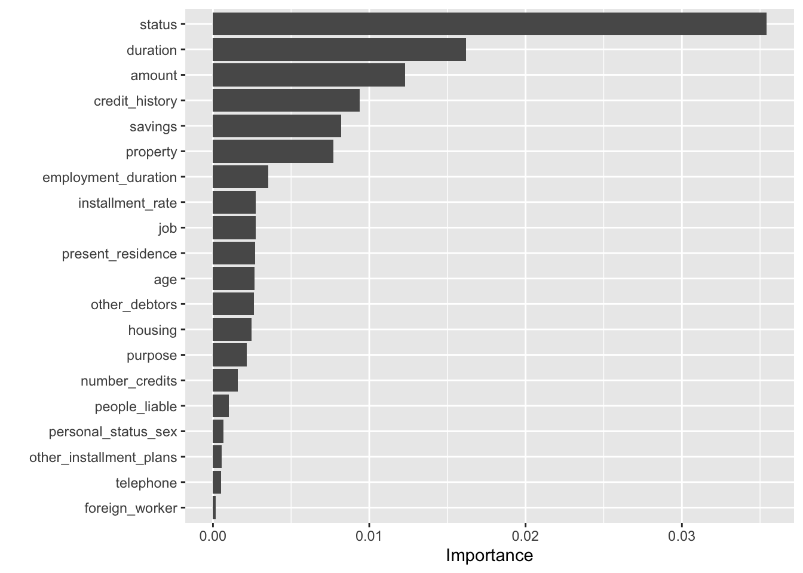
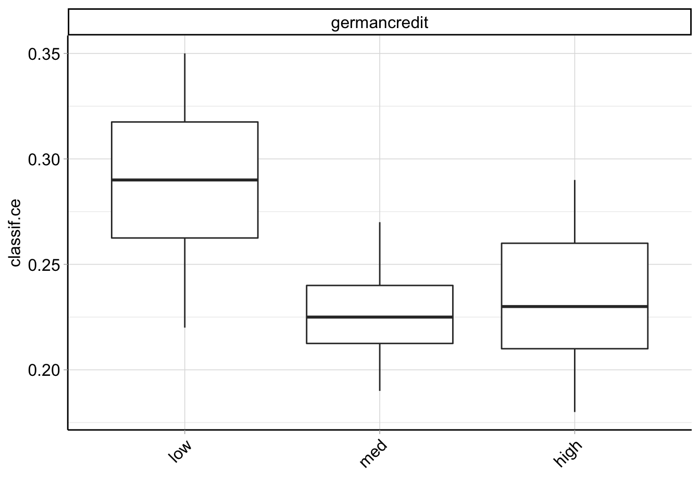

Chapter 4 Sample for Classification Problems
4.1 Load the R Environment
library(mlr3)
library(mlr3learners)
library(mlr3viz)
library(ggplot2)
library(data.table)
library(tidyverse)4.2 Data Description
To help readers quickly get started with this package, this section uses the the German credit dataset as an example to show full steps of machine learning.
4.2.1 Load the Data
#install.packages("rchallenge")
data("german", package = "rchallenge")
#observe the data
glimpse(german) # Data Type## Rows: 1,000
## Columns: 21
## $ status <fct> no checking account, no checking account, ... …
## $ duration <int> 18, 9, 12, 12, 12, 10, 8, 6, 18, 24, 11, 30, 6…
## $ credit_history <fct> all credits at this bank paid back duly, all c…
## $ purpose <fct> car (used), others, retraining, others, others…
## $ amount <int> 1049, 2799, 841, 2122, 2171, 2241, 3398, 1361,…
## $ savings <fct> unknown/no savings account, unknown/no savings…
## $ employment_duration <fct> < 1 yr, 1 <= ... < 4 yrs, 4 <= ... < 7 yrs, 1 …
## $ installment_rate <ord> < 20, 25 <= ... < 35, 25 <= ... < 35, 20 <= ..…
## $ personal_status_sex <fct> female : non-single or male : single, male : m…
## $ other_debtors <fct> none, none, none, none, none, none, none, none…
## $ present_residence <ord> >= 7 yrs, 1 <= ... < 4 yrs, >= 7 yrs, 1 <= ...…
## $ property <fct> car or other, unknown / no property, unknown /…
## $ age <int> 21, 36, 23, 39, 38, 48, 39, 40, 65, 23, 36, 24…
## $ other_installment_plans <fct> none, none, none, none, bank, none, none, none…
## $ housing <fct> for free, for free, for free, for free, rent, …
## $ number_credits <ord> 1, 2-3, 1, 2-3, 2-3, 2-3, 2-3, 1, 2-3, 1, 2-3,…
## $ job <fct> skilled employee/official, skilled employee/of…
## $ people_liable <fct> 0 to 2, 3 or more, 0 to 2, 3 or more, 0 to 2, …
## $ telephone <fct> no, no, no, no, no, no, no, no, no, no, no, no…
## $ foreign_worker <fct> no, no, no, yes, yes, yes, yes, yes, no, no, n…
## $ credit_risk <fct> good, good, good, good, good, good, good, good…dim(german) # dimension of data## [1] 1000 21Through observation, it is found that the dataset has a total of 2000 observations and 21 attributes (columns). The dependent variable we want to predict is creadit_risk (good or bad), and there are 20 independent variables in total, among which duration, age and amount are numerical variables, and the rest are factor variables.
skimr packages can be used for a more detailed look at understanding variables.
#install.packages("skimr")
skimr::skim(german)| Name | german |
| Number of rows | 1000 |
| Number of columns | 21 |
| _______________________ | |
| Column type frequency: | |
| factor | 18 |
| numeric | 3 |
| ________________________ | |
| Group variables | None |
Variable type: factor
| skim_variable | n_missing | complete_rate | ordered | n_unique | top_counts |
|---|---|---|---|---|---|
| status | 0 | 1 | FALSE | 4 | …: 394, no : 274, …: 269, 0<=: 63 |
| credit_history | 0 | 1 | FALSE | 5 | no : 530, all: 293, exi: 88, cri: 49 |
| purpose | 0 | 1 | FALSE | 10 | fur: 280, oth: 234, car: 181, car: 103 |
| savings | 0 | 1 | FALSE | 5 | unk: 603, …: 183, …: 103, 100: 63 |
| employment_duration | 0 | 1 | FALSE | 5 | 1 <: 339, >= : 253, 4 <: 174, < 1: 172 |
| installment_rate | 0 | 1 | TRUE | 4 | < 2: 476, 25 : 231, 20 : 157, >= : 136 |
| personal_status_sex | 0 | 1 | FALSE | 4 | mal: 548, fem: 310, fem: 92, mal: 50 |
| other_debtors | 0 | 1 | FALSE | 3 | non: 907, gua: 52, co-: 41 |
| present_residence | 0 | 1 | TRUE | 4 | >= : 413, 1 <: 308, 4 <: 149, < 1: 130 |
| property | 0 | 1 | FALSE | 4 | bui: 332, unk: 282, car: 232, rea: 154 |
| other_installment_plans | 0 | 1 | FALSE | 3 | non: 814, ban: 139, sto: 47 |
| housing | 0 | 1 | FALSE | 3 | ren: 714, for: 179, own: 107 |
| number_credits | 0 | 1 | TRUE | 4 | 1: 633, 2-3: 333, 4-5: 28, >= : 6 |
| job | 0 | 1 | FALSE | 4 | ski: 630, uns: 200, man: 148, une: 22 |
| people_liable | 0 | 1 | FALSE | 2 | 0 t: 845, 3 o: 155 |
| telephone | 0 | 1 | FALSE | 2 | no: 596, yes: 404 |
| foreign_worker | 0 | 1 | FALSE | 2 | no: 963, yes: 37 |
| credit_risk | 0 | 1 | FALSE | 2 | goo: 700, bad: 300 |
Variable type: numeric
| skim_variable | n_missing | complete_rate | mean | sd | p0 | p25 | p50 | p75 | p100 | hist |
|---|---|---|---|---|---|---|---|---|---|---|
| duration | 0 | 1 | 20.90 | 12.06 | 4 | 12.0 | 18.0 | 24.00 | 72 | ▇▇▂▁▁ |
| amount | 0 | 1 | 3271.25 | 2822.75 | 250 | 1365.5 | 2319.5 | 3972.25 | 18424 | ▇▂▁▁▁ |
| age | 0 | 1 | 35.54 | 11.35 | 19 | 27.0 | 33.0 | 42.00 | 75 | ▇▆▃▁▁ |
4.3 Modeling
When solving the credit risk classification problem by using the mlr3 package, typical problems that arise when building machine learning workflows are:
What is the problem we are trying to solve? What is the appropriate learning algorithm? How do we evaluate “good” performance?
More systematically in mlr3, they can be represented by five components:
- Task Definition
- Learner Definition
- Training
- Prediction
- Performance Evaluation
4.3.1 Task Definition
Firstly, we need to determine the goal of the modeling. Most supervised machine learning problems are regression or classification problems. In mlr3, we define tasks to distinguish between these problems. If we want to solve a classification problem, we define a classification task, TaskClassif. For the regression problem, we define a regression task, TaskRegr.
In our example, our goal is clearly to model or predict the two-factor variable credit_risk. Therefore, we define a TaskClassif:
task = TaskClassif$new("germancredit", german , target = "credit_risk")4.3.2 Leaner Definition
After defining the task, we need to decide how to model. This means we need to decide what learning algorithms or Learners are appropriate. Using prior knowledge (for example, knowing that this is a classification task or assuming that the class is linearly divisible) will eventually result in one or more suitable learners.
Many learners are available through the mlr3learners package. In addition, many of the learners are provided via the mlr3extralearners package on GitHub. Together, these two resources account for a large portion of standard learning algorithms.
mlr_learners## <DictionaryLearner> with 27 stored values
## Keys: classif.cv_glmnet, classif.debug, classif.featureless,
## classif.glmnet, classif.kknn, classif.lda, classif.log_reg,
## classif.multinom, classif.naive_bayes, classif.nnet, classif.qda,
## classif.ranger, classif.rpart, classif.svm, classif.xgboost,
## regr.cv_glmnet, regr.debug, regr.featureless, regr.glmnet, regr.kknn,
## regr.km, regr.lm, regr.nnet, regr.ranger, regr.rpart, regr.svm,
## regr.xgboostA suitable learner for our problem could be one of the following: Logistic regression, CART, random forest, etc.
The learner can be initialized using the lrn() function and the name of the learner, such as lrn(" classif.xxx "). Use mlr_learners_xxx opens the help page for a learner named xxx.
For example, logistic regression can be initialized by the following way (logistic regression uses R’s glm() function, provided by the mlr3learners package) :
library("mlr3learners")
learner_logreg = lrn("classif.log_reg")
print(learner_logreg)## <LearnerClassifLogReg:classif.log_reg>
## * Model: -
## * Parameters: list()
## * Packages: mlr3, mlr3learners, stats
## * Predict Types: [response], prob
## * Feature Types: logical, integer, numeric, character, factor, ordered
## * Properties: loglik, twoclass4.3.3 Training
Training is the process of fitting a model to data.
- logistic regression
Let’s start with an example of logistic regression. However, you will immediately see that this process is very easy to generalize to any learner.
You can use $train() to train the initialized learner:
learner_logreg$train(task)Typically, in machine learning, we don’t use the full data available, but instead use a subset, the so-called training data. To perform data splitting effectively, you can do the following:
train_set = sample(task$row_ids, 0.8 * task$nrow)
test_set = setdiff(task$row_ids, train_set)80% of the data is used for training. The remaining 20% is used for subsequent evaluation. train_set is an integer vector that refers to the selected rows of the original dataset. In mlr3, you can declare training using a subset of the data by attaching the parameter row_ids = train_set:
learner_logreg$train(task, row_ids = train_set)The model after training fitting can be displayed through the following commands:
learner_logreg$model##
## Call: stats::glm(formula = task$formula(), family = "binomial", data = data,
## model = FALSE)
##
## Coefficients:
## (Intercept)
## 0.7393024
## age
## -0.0103150
## amount
## 0.0001586
## credit_historycritical account/other credits elsewhere
## 0.2470500
## credit_historyno credits taken/all credits paid back duly
## -0.5043088
## credit_historyexisting credits paid back duly till now
## -0.8117585
## credit_historyall credits at this bank paid back duly
## -1.2901215
## duration
## 0.0157534
## employment_duration< 1 yr
## -0.2407276
## employment_duration1 <= ... < 4 yrs
## -0.4283570
## employment_duration4 <= ... < 7 yrs
## -1.0132959
## employment_duration>= 7 yrs
## -0.3181201
## foreign_workerno
## 1.4930677
## housingrent
## -0.8032630
## housingown
## -0.9057892
## installment_rate.L
## 0.7182113
## installment_rate.Q
## 0.0856488
## installment_rate.C
## -0.0095899
## jobunskilled - resident
## 0.3889215
## jobskilled employee/official
## 0.2737369
## jobmanager/self-empl./highly qualif. employee
## 0.0706391
## number_credits.L
## -0.2086566
## number_credits.Q
## -0.3404571
## number_credits.C
## 0.0561097
## other_debtorsco-applicant
## 0.4413128
## other_debtorsguarantor
## -0.6490479
## other_installment_plansstores
## 0.0882786
## other_installment_plansnone
## -0.4582146
## people_liable0 to 2
## -0.2696636
## personal_status_sexfemale : non-single or male : single
## -0.2811773
## personal_status_sexmale : married/widowed
## -0.7107909
## personal_status_sexfemale : single
## -0.5110095
## present_residence.L
## 0.1059484
## present_residence.Q
## -0.4996117
## present_residence.C
## 0.1126060
## propertycar or other
## 0.5622138
## propertybuilding soc. savings agr./life insurance
## 0.2997796
## propertyreal estate
## 0.8703685
## purposecar (new)
## -1.5784282
## purposecar (used)
## -0.6611569
## purposefurniture/equipment
## -0.5825260
## purposeradio/television
## -1.1724203
## purposedomestic appliances
## 0.2088118
## purposerepairs
## 0.4235540
## purposevacation
## -1.6464046
## purposeretraining
## -0.3732084
## purposebusiness
## -1.6202009
## savings... < 100 DM
## -0.2514161
## savings100 <= ... < 500 DM
## -0.7138744
## savings500 <= ... < 1000 DM
## -1.0130046
## savings... >= 1000 DM
## -0.9017536
## status... < 0 DM
## -0.5149461
## status0<= ... < 200 DM
## -0.8929955
## status... >= 200 DM / salary for at least 1 year
## -1.7608146
## telephoneyes (under customer name)
## -0.2743350
##
## Degrees of Freedom: 799 Total (i.e. Null); 745 Residual
## Null Deviance: 982.4
## Residual Deviance: 720.9 AIC: 830.9You can check the type and summary of the model after Logistic regression training:
class(learner_logreg$model)## [1] "glm" "lm"summary(learner_logreg$model)##
## Call:
## stats::glm(formula = task$formula(), family = "binomial", data = data,
## model = FALSE)
##
## Deviance Residuals:
## Min 1Q Median 3Q Max
## -2.2577 -0.7179 -0.3859 0.7124 2.5359
##
## Coefficients:
## Estimate Std. Error
## (Intercept) 0.7393024 1.2493778
## age -0.0103150 0.0101651
## amount 0.0001586 0.0000495
## credit_historycritical account/other credits elsewhere 0.2470499 0.6109180
## credit_historyno credits taken/all credits paid back duly -0.5043088 0.4737427
## credit_historyexisting credits paid back duly till now -0.8117585 0.5214737
## credit_historyall credits at this bank paid back duly -1.2901215 0.4843968
## duration 0.0157534 0.0104132
## employment_duration< 1 yr -0.2407276 0.4713861
## employment_duration1 <= ... < 4 yrs -0.4283570 0.4486026
## employment_duration4 <= ... < 7 yrs -1.0132959 0.4925025
## employment_duration>= 7 yrs -0.3181201 0.4503263
## foreign_workerno 1.4930677 0.6354834
## housingrent -0.8032630 0.2691221
## housingown -0.9057892 0.5438347
## installment_rate.L 0.7182114 0.2444771
## installment_rate.Q 0.0856488 0.2198757
## installment_rate.C -0.0095899 0.2261949
## jobunskilled - resident 0.3889215 0.7071465
## jobskilled employee/official 0.2737369 0.6837783
## jobmanager/self-empl./highly qualif. employee 0.0706391 0.6909866
## number_credits.L -0.2086566 0.9494678
## number_credits.Q -0.3404571 0.7760037
## number_credits.C 0.0561097 0.5545555
## other_debtorsco-applicant 0.4413128 0.4517712
## other_debtorsguarantor -0.6490479 0.4645057
## other_installment_plansstores 0.0882786 0.4905346
## other_installment_plansnone -0.4582146 0.2862939
## people_liable0 to 2 -0.2696636 0.2840207
## personal_status_sexfemale : non-single or male : single -0.2811773 0.4514250
## personal_status_sexmale : married/widowed -0.7107909 0.4460512
## personal_status_sexfemale : single -0.5110095 0.5225887
## present_residence.L 0.1059484 0.2382842
## present_residence.Q -0.4996117 0.2265493
## present_residence.C 0.1126060 0.2199322
## propertycar or other 0.5622139 0.2899486
## propertybuilding soc. savings agr./life insurance 0.2997796 0.2691999
## propertyreal estate 0.8703685 0.4770472
## purposecar (new) -1.5784282 0.4107929
## purposecar (used) -0.6611569 0.2989669
## purposefurniture/equipment -0.5825260 0.2800507
## purposeradio/television -1.1724203 1.0097400
## purposedomestic appliances 0.2088118 0.5791930
## purposerepairs 0.4235540 0.4335391
## purposevacation -1.6464046 1.2169225
## purposeretraining -0.3732084 0.3731087
## purposebusiness -1.6202009 0.8768578
## savings... < 100 DM -0.2514161 0.3144987
## savings100 <= ... < 500 DM -0.7138744 0.5200657
## savings500 <= ... < 1000 DM -1.0130046 0.5648259
## savings... >= 1000 DM -0.9017536 0.2974495
## status... < 0 DM -0.5149461 0.2512535
## status0<= ... < 200 DM -0.8929955 0.4196694
## status... >= 200 DM / salary for at least 1 year -1.7608146 0.2611354
## telephoneyes (under customer name) -0.2743350 0.2257623
## z value Pr(>|z|)
## (Intercept) 0.592 0.554027
## age -1.015 0.310225
## amount 3.204 0.001357 **
## credit_historycritical account/other credits elsewhere 0.404 0.685925
## credit_historyno credits taken/all credits paid back duly -1.065 0.287093
## credit_historyexisting credits paid back duly till now -1.557 0.119551
## credit_historyall credits at this bank paid back duly -2.663 0.007737 **
## duration 1.513 0.130323
## employment_duration< 1 yr -0.511 0.609575
## employment_duration1 <= ... < 4 yrs -0.955 0.339644
## employment_duration4 <= ... < 7 yrs -2.057 0.039644 *
## employment_duration>= 7 yrs -0.706 0.479926
## foreign_workerno 2.349 0.018799 *
## housingrent -2.985 0.002838 **
## housingown -1.666 0.095801 .
## installment_rate.L 2.938 0.003306 **
## installment_rate.Q 0.390 0.696882
## installment_rate.C -0.042 0.966182
## jobunskilled - resident 0.550 0.582328
## jobskilled employee/official 0.400 0.688914
## jobmanager/self-empl./highly qualif. employee 0.102 0.918575
## number_credits.L -0.220 0.826057
## number_credits.Q -0.439 0.660856
## number_credits.C 0.101 0.919408
## other_debtorsco-applicant 0.977 0.328643
## other_debtorsguarantor -1.397 0.162327
## other_installment_plansstores 0.180 0.857181
## other_installment_plansnone -1.601 0.109487
## people_liable0 to 2 -0.949 0.342392
## personal_status_sexfemale : non-single or male : single -0.623 0.533373
## personal_status_sexmale : married/widowed -1.594 0.111044
## personal_status_sexfemale : single -0.978 0.328152
## present_residence.L 0.445 0.656587
## present_residence.Q -2.205 0.027432 *
## present_residence.C 0.512 0.608649
## propertycar or other 1.939 0.052500 .
## propertybuilding soc. savings agr./life insurance 1.114 0.265453
## propertyreal estate 1.824 0.068078 .
## purposecar (new) -3.842 0.000122 ***
## purposecar (used) -2.211 0.027003 *
## purposefurniture/equipment -2.080 0.037519 *
## purposeradio/television -1.161 0.245597
## purposedomestic appliances 0.361 0.718457
## purposerepairs 0.977 0.328585
## purposevacation -1.353 0.176080
## purposeretraining -1.000 0.317181
## purposebusiness -1.848 0.064641 .
## savings... < 100 DM -0.799 0.424048
## savings100 <= ... < 500 DM -1.373 0.169857
## savings500 <= ... < 1000 DM -1.793 0.072896 .
## savings... >= 1000 DM -3.032 0.002432 **
## status... < 0 DM -2.050 0.040412 *
## status0<= ... < 200 DM -2.128 0.033349 *
## status... >= 200 DM / salary for at least 1 year -6.743 1.55e-11 ***
## telephoneyes (under customer name) -1.215 0.224309
## ---
## Signif. codes: 0 '***' 0.001 '**' 0.01 '*' 0.05 '.' 0.1 ' ' 1
##
## (Dispersion parameter for binomial family taken to be 1)
##
## Null deviance: 982.41 on 799 degrees of freedom
## Residual deviance: 720.91 on 745 degrees of freedom
## AIC: 830.91
##
## Number of Fisher Scoring iterations: 5- Random Forest
Just like logistic regression, we can train a random forest. We use the ranger package to do this quickly. To do this, we first need to define the learner and then actually train it.
We now provide additional importance parameters (importance = “permutation”). In doing so, we override the default and let the learner determine the importance of the feature based on the ranking of the importance of the feature:
learner_rf = lrn("classif.ranger", importance = "permutation")
learner_rf$train(task, row_ids = train_set)learner_rf$importance()## status duration amount
## 0.0354184416 0.0162090730 0.0123043308
## credit_history savings property
## 0.0093680090 0.0082123808 0.0077066093
## employment_duration installment_rate job
## 0.0035315300 0.0027344004 0.0027228244
## present_residence age other_debtors
## 0.0027105217 0.0026407311 0.0026180095
## housing purpose number_credits
## 0.0024825109 0.0021642260 0.0015904113
## people_liable personal_status_sex other_installment_plans
## 0.0010299556 0.0006810170 0.0005749214
## telephone foreign_worker
## 0.0005376060 0.0001642216To get a graph of importance values, we convert importance to data.table format and process it with ggplot2:
importance = as.data.table(learner_rf$importance(), keep.rownames = TRUE)
colnames(importance) = c("Feature", "Importance")
ggplot(data=importance,
aes(x = reorder(Feature, Importance), y = Importance)) +
geom_col() + coord_flip() + xlab("") It can be seen that the first seven variables play an important role in predicting the dependent variable.
4.3.4 Prediction
Next we will use the trained model to make predictions. After training the model, the model can be used for prediction. In general, prediction is the main purpose of machine learning models.
In our case, the model can be used to classify new credit applicants. They are based on the associated credit risk (good and bad) of the feature. Typically, machine learning models predict numerical values. In a regression situation, this is natural. For classification, most models predict scores or probabilities. Based on these values, category predictions can be made.
- Predict Classes
pred_logreg = learner_logreg$predict(task, row_ids = test_set)
pred_rf = learner_rf$predict(task, row_ids = test_set)
pred_logreg## <PredictionClassif> for 200 observations:
## row_ids truth response
## 11 good bad
## 21 good good
## 22 good good
## ---
## 995 bad bad
## 996 bad bad
## 997 bad badpred_rf## <PredictionClassif> for 200 observations:
## row_ids truth response
## 11 good good
## 21 good good
## 22 good good
## ---
## 995 bad bad
## 996 bad good
## 997 bad badThe $predict() method returns a Prediction object. If you want to use it later, you can convert it to data.table format. We can also display the prediction results in the confusion matrix:
pred_logreg$confusion## truth
## response bad good
## bad 25 16
## good 32 127pred_rf$confusion## truth
## response bad good
## bad 22 9
## good 35 134- Predict Probabilities
Most learning period Learner can not only predict category variables (” response “), but also predict their”confidence”/” uncertainty “degree to a given response. Typically, we do this by setting the Learner’s $predict_type to”prob”. Sometimes this needs to be done before the learner is trained. Alternatively, we can create the learner directly using this option: lrn(" classif.log_reg ", predict_type= "prob")
learner_logreg$predict_type = "prob"
learner_logreg$predict(task, row_ids = test_set)## <PredictionClassif> for 200 observations:
## row_ids truth response prob.bad prob.good
## 11 good bad 0.5953696 0.40463043
## 21 good good 0.4406688 0.55933120
## 22 good good 0.3221651 0.67783491
## ---
## 995 bad bad 0.9094086 0.09059142
## 996 bad bad 0.5018693 0.49813068
## 997 bad bad 0.5734202 0.426579774.3.5 Performance Evaluation
To measure the learner’s performance on new data, we usually simulate a sight unseen data by dividing the data into training sets and test sets. The training set is used to train the learner, and the test set is only used to predict and evaluate the performance of the trained learner. Many resampling methods (cross-validation, bootstrap) repeat the segmentation process in different ways.
In mlr3, we need to specify the resampling strategy using the rsmp() function:
resampling = rsmp("holdout", ratio = 2/3)
print(resampling)## <ResamplingHoldout>: Holdout
## * Iterations: 1
## * Instantiated: FALSE
## * Parameters: ratio=0.6667In this case, we use a “holdout,” which is a simple train-test split (only one iteration). We use the resample() function for resampling calculation:
res = resample(task, learner = learner_logreg, resampling = resampling)## INFO [16:24:27.209] [mlr3] Applying learner 'classif.log_reg' on task 'germancredit' (iter 1/1)res## <ResampleResult> of 1 iterations
## * Task: germancredit
## * Learner: classif.log_reg
## * Warnings: 0 in 0 iterations
## * Errors: 0 in 0 iterationsThe default score for the measure is included in $aggregate():
res$aggregate()## classif.ce
## 0.2942943The default metric in this case is classification error. The lower the better.
We can run different resampling strategies, such as repeated adherence (” secondary sampling “), or cross-validation. Most methods perform repeated training/prediction cycles on different subsets of data and aggregate the results (usually as averages). Doing this manually requires us to write a loop. mlr3 does the job for us:
resampling = rsmp("subsampling", repeats=10)
rr = resample(task, learner = learner_logreg, resampling = resampling)## INFO [16:24:27.327] [mlr3] Applying learner 'classif.log_reg' on task 'germancredit' (iter 1/10)
## INFO [16:24:27.371] [mlr3] Applying learner 'classif.log_reg' on task 'germancredit' (iter 2/10)
## INFO [16:24:27.396] [mlr3] Applying learner 'classif.log_reg' on task 'germancredit' (iter 3/10)
## INFO [16:24:27.439] [mlr3] Applying learner 'classif.log_reg' on task 'germancredit' (iter 4/10)
## INFO [16:24:27.476] [mlr3] Applying learner 'classif.log_reg' on task 'germancredit' (iter 5/10)
## INFO [16:24:27.514] [mlr3] Applying learner 'classif.log_reg' on task 'germancredit' (iter 6/10)
## INFO [16:24:27.552] [mlr3] Applying learner 'classif.log_reg' on task 'germancredit' (iter 7/10)
## INFO [16:24:27.579] [mlr3] Applying learner 'classif.log_reg' on task 'germancredit' (iter 8/10)
## INFO [16:24:27.616] [mlr3] Applying learner 'classif.log_reg' on task 'germancredit' (iter 9/10)
## INFO [16:24:27.640] [mlr3] Applying learner 'classif.log_reg' on task 'germancredit' (iter 10/10)rr$aggregate()## classif.ce
## 0.254955In addition, we can also use cross validation:
resampling = resampling = rsmp("cv", folds=10)
rr = resample(task, learner = learner_logreg, resampling = resampling)## INFO [16:24:27.701] [mlr3] Applying learner 'classif.log_reg' on task 'germancredit' (iter 1/10)
## INFO [16:24:27.729] [mlr3] Applying learner 'classif.log_reg' on task 'germancredit' (iter 2/10)
## INFO [16:24:27.759] [mlr3] Applying learner 'classif.log_reg' on task 'germancredit' (iter 3/10)
## INFO [16:24:27.787] [mlr3] Applying learner 'classif.log_reg' on task 'germancredit' (iter 4/10)
## INFO [16:24:27.817] [mlr3] Applying learner 'classif.log_reg' on task 'germancredit' (iter 5/10)
## INFO [16:24:27.842] [mlr3] Applying learner 'classif.log_reg' on task 'germancredit' (iter 6/10)
## INFO [16:24:27.868] [mlr3] Applying learner 'classif.log_reg' on task 'germancredit' (iter 7/10)
## INFO [16:24:27.897] [mlr3] Applying learner 'classif.log_reg' on task 'germancredit' (iter 8/10)
## INFO [16:24:27.922] [mlr3] Applying learner 'classif.log_reg' on task 'germancredit' (iter 9/10)
## INFO [16:24:27.970] [mlr3] Applying learner 'classif.log_reg' on task 'germancredit' (iter 10/10)rr$aggregate()## classif.ce
## 0.2494.3.6 Performance Comparision and Benchmarks
We can compare the learner by manually evaluating the resample() for each learning period. However, benchmark() automatically performs resampling evaluations for multiple learners and tasks. benchmark_grid() Create a fully interleaved design: compare multiple learners on multiple tasks. Resampling multiple times.
learners = lrns(c("classif.log_reg", "classif.ranger"), predict_type = "prob")
bm_design = benchmark_grid(
tasks = task,
learners = learners,
resamplings = rsmp("cv", folds = 50)
)
bmr = benchmark(bm_design)## INFO [16:24:28.073] [mlr3] Running benchmark with 100 resampling iterations
## INFO [16:24:28.077] [mlr3] Applying learner 'classif.log_reg' on task 'germancredit' (iter 1/50)
## INFO [16:24:28.114] [mlr3] Applying learner 'classif.log_reg' on task 'germancredit' (iter 2/50)
## INFO [16:24:28.177] [mlr3] Applying learner 'classif.log_reg' on task 'germancredit' (iter 3/50)
## INFO [16:24:28.204] [mlr3] Applying learner 'classif.log_reg' on task 'germancredit' (iter 4/50)
## INFO [16:24:28.232] [mlr3] Applying learner 'classif.log_reg' on task 'germancredit' (iter 5/50)
## INFO [16:24:28.264] [mlr3] Applying learner 'classif.log_reg' on task 'germancredit' (iter 6/50)
## INFO [16:24:28.291] [mlr3] Applying learner 'classif.log_reg' on task 'germancredit' (iter 7/50)
## INFO [16:24:28.318] [mlr3] Applying learner 'classif.log_reg' on task 'germancredit' (iter 8/50)
## INFO [16:24:28.349] [mlr3] Applying learner 'classif.log_reg' on task 'germancredit' (iter 9/50)
## INFO [16:24:28.376] [mlr3] Applying learner 'classif.log_reg' on task 'germancredit' (iter 10/50)
## INFO [16:24:28.404] [mlr3] Applying learner 'classif.log_reg' on task 'germancredit' (iter 11/50)
## INFO [16:24:28.435] [mlr3] Applying learner 'classif.log_reg' on task 'germancredit' (iter 12/50)
## INFO [16:24:28.462] [mlr3] Applying learner 'classif.log_reg' on task 'germancredit' (iter 13/50)
## INFO [16:24:28.489] [mlr3] Applying learner 'classif.log_reg' on task 'germancredit' (iter 14/50)
## INFO [16:24:28.543] [mlr3] Applying learner 'classif.log_reg' on task 'germancredit' (iter 15/50)
## INFO [16:24:28.695] [mlr3] Applying learner 'classif.log_reg' on task 'germancredit' (iter 16/50)
## INFO [16:24:28.724] [mlr3] Applying learner 'classif.log_reg' on task 'germancredit' (iter 17/50)
## INFO [16:24:28.753] [mlr3] Applying learner 'classif.log_reg' on task 'germancredit' (iter 18/50)
## INFO [16:24:28.782] [mlr3] Applying learner 'classif.log_reg' on task 'germancredit' (iter 19/50)
## INFO [16:24:28.811] [mlr3] Applying learner 'classif.log_reg' on task 'germancredit' (iter 20/50)
## INFO [16:24:28.845] [mlr3] Applying learner 'classif.log_reg' on task 'germancredit' (iter 21/50)
## INFO [16:24:28.875] [mlr3] Applying learner 'classif.log_reg' on task 'germancredit' (iter 22/50)
## INFO [16:24:28.905] [mlr3] Applying learner 'classif.log_reg' on task 'germancredit' (iter 23/50)
## INFO [16:24:28.933] [mlr3] Applying learner 'classif.log_reg' on task 'germancredit' (iter 24/50)
## INFO [16:24:28.959] [mlr3] Applying learner 'classif.log_reg' on task 'germancredit' (iter 25/50)
## INFO [16:24:28.992] [mlr3] Applying learner 'classif.log_reg' on task 'germancredit' (iter 26/50)
## INFO [16:24:29.019] [mlr3] Applying learner 'classif.log_reg' on task 'germancredit' (iter 27/50)
## INFO [16:24:29.046] [mlr3] Applying learner 'classif.log_reg' on task 'germancredit' (iter 28/50)
## INFO [16:24:29.072] [mlr3] Applying learner 'classif.log_reg' on task 'germancredit' (iter 29/50)
## INFO [16:24:29.100] [mlr3] Applying learner 'classif.log_reg' on task 'germancredit' (iter 30/50)
## INFO [16:24:29.131] [mlr3] Applying learner 'classif.log_reg' on task 'germancredit' (iter 31/50)
## INFO [16:24:29.158] [mlr3] Applying learner 'classif.log_reg' on task 'germancredit' (iter 32/50)
## INFO [16:24:29.185] [mlr3] Applying learner 'classif.log_reg' on task 'germancredit' (iter 33/50)
## INFO [16:24:29.212] [mlr3] Applying learner 'classif.log_reg' on task 'germancredit' (iter 34/50)
## INFO [16:24:29.243] [mlr3] Applying learner 'classif.log_reg' on task 'germancredit' (iter 35/50)
## INFO [16:24:29.270] [mlr3] Applying learner 'classif.log_reg' on task 'germancredit' (iter 36/50)
## INFO [16:24:29.297] [mlr3] Applying learner 'classif.log_reg' on task 'germancredit' (iter 37/50)
## INFO [16:24:29.323] [mlr3] Applying learner 'classif.log_reg' on task 'germancredit' (iter 38/50)
## INFO [16:24:29.350] [mlr3] Applying learner 'classif.log_reg' on task 'germancredit' (iter 39/50)
## INFO [16:24:29.381] [mlr3] Applying learner 'classif.log_reg' on task 'germancredit' (iter 40/50)
## INFO [16:24:29.408] [mlr3] Applying learner 'classif.log_reg' on task 'germancredit' (iter 41/50)
## INFO [16:24:29.434] [mlr3] Applying learner 'classif.log_reg' on task 'germancredit' (iter 42/50)
## INFO [16:24:29.461] [mlr3] Applying learner 'classif.log_reg' on task 'germancredit' (iter 43/50)
## INFO [16:24:29.491] [mlr3] Applying learner 'classif.log_reg' on task 'germancredit' (iter 44/50)
## INFO [16:24:29.518] [mlr3] Applying learner 'classif.log_reg' on task 'germancredit' (iter 45/50)
## INFO [16:24:29.544] [mlr3] Applying learner 'classif.log_reg' on task 'germancredit' (iter 46/50)
## INFO [16:24:29.571] [mlr3] Applying learner 'classif.log_reg' on task 'germancredit' (iter 47/50)
## INFO [16:24:29.601] [mlr3] Applying learner 'classif.log_reg' on task 'germancredit' (iter 48/50)
## INFO [16:24:29.628] [mlr3] Applying learner 'classif.log_reg' on task 'germancredit' (iter 49/50)
## INFO [16:24:29.655] [mlr3] Applying learner 'classif.log_reg' on task 'germancredit' (iter 50/50)
## INFO [16:24:29.682] [mlr3] Applying learner 'classif.ranger' on task 'germancredit' (iter 1/50)
## INFO [16:24:29.895] [mlr3] Applying learner 'classif.ranger' on task 'germancredit' (iter 2/50)
## INFO [16:24:30.104] [mlr3] Applying learner 'classif.ranger' on task 'germancredit' (iter 3/50)
## INFO [16:24:30.315] [mlr3] Applying learner 'classif.ranger' on task 'germancredit' (iter 4/50)
## INFO [16:24:30.524] [mlr3] Applying learner 'classif.ranger' on task 'germancredit' (iter 5/50)
## INFO [16:24:30.738] [mlr3] Applying learner 'classif.ranger' on task 'germancredit' (iter 6/50)
## INFO [16:24:30.945] [mlr3] Applying learner 'classif.ranger' on task 'germancredit' (iter 7/50)
## INFO [16:24:31.152] [mlr3] Applying learner 'classif.ranger' on task 'germancredit' (iter 8/50)
## INFO [16:24:31.364] [mlr3] Applying learner 'classif.ranger' on task 'germancredit' (iter 9/50)
## INFO [16:24:31.601] [mlr3] Applying learner 'classif.ranger' on task 'germancredit' (iter 10/50)
## INFO [16:24:31.825] [mlr3] Applying learner 'classif.ranger' on task 'germancredit' (iter 11/50)
## INFO [16:24:32.034] [mlr3] Applying learner 'classif.ranger' on task 'germancredit' (iter 12/50)
## INFO [16:24:32.241] [mlr3] Applying learner 'classif.ranger' on task 'germancredit' (iter 13/50)
## INFO [16:24:32.450] [mlr3] Applying learner 'classif.ranger' on task 'germancredit' (iter 14/50)
## INFO [16:24:32.656] [mlr3] Applying learner 'classif.ranger' on task 'germancredit' (iter 15/50)
## INFO [16:24:32.866] [mlr3] Applying learner 'classif.ranger' on task 'germancredit' (iter 16/50)
## INFO [16:24:33.082] [mlr3] Applying learner 'classif.ranger' on task 'germancredit' (iter 17/50)
## INFO [16:24:33.293] [mlr3] Applying learner 'classif.ranger' on task 'germancredit' (iter 18/50)
## INFO [16:24:33.501] [mlr3] Applying learner 'classif.ranger' on task 'germancredit' (iter 19/50)
## INFO [16:24:33.716] [mlr3] Applying learner 'classif.ranger' on task 'germancredit' (iter 20/50)
## INFO [16:24:33.924] [mlr3] Applying learner 'classif.ranger' on task 'germancredit' (iter 21/50)
## INFO [16:24:34.136] [mlr3] Applying learner 'classif.ranger' on task 'germancredit' (iter 22/50)
## INFO [16:24:34.346] [mlr3] Applying learner 'classif.ranger' on task 'germancredit' (iter 23/50)
## INFO [16:24:34.551] [mlr3] Applying learner 'classif.ranger' on task 'germancredit' (iter 24/50)
## INFO [16:24:34.760] [mlr3] Applying learner 'classif.ranger' on task 'germancredit' (iter 25/50)
## INFO [16:24:34.973] [mlr3] Applying learner 'classif.ranger' on task 'germancredit' (iter 26/50)
## INFO [16:24:35.177] [mlr3] Applying learner 'classif.ranger' on task 'germancredit' (iter 27/50)
## INFO [16:24:35.387] [mlr3] Applying learner 'classif.ranger' on task 'germancredit' (iter 28/50)
## INFO [16:24:35.604] [mlr3] Applying learner 'classif.ranger' on task 'germancredit' (iter 29/50)
## INFO [16:24:35.815] [mlr3] Applying learner 'classif.ranger' on task 'germancredit' (iter 30/50)
## INFO [16:24:36.029] [mlr3] Applying learner 'classif.ranger' on task 'germancredit' (iter 31/50)
## INFO [16:24:36.248] [mlr3] Applying learner 'classif.ranger' on task 'germancredit' (iter 32/50)
## INFO [16:24:36.467] [mlr3] Applying learner 'classif.ranger' on task 'germancredit' (iter 33/50)
## INFO [16:24:36.675] [mlr3] Applying learner 'classif.ranger' on task 'germancredit' (iter 34/50)
## INFO [16:24:36.883] [mlr3] Applying learner 'classif.ranger' on task 'germancredit' (iter 35/50)
## INFO [16:24:37.090] [mlr3] Applying learner 'classif.ranger' on task 'germancredit' (iter 36/50)
## INFO [16:24:37.299] [mlr3] Applying learner 'classif.ranger' on task 'germancredit' (iter 37/50)
## INFO [16:24:37.513] [mlr3] Applying learner 'classif.ranger' on task 'germancredit' (iter 38/50)
## INFO [16:24:37.719] [mlr3] Applying learner 'classif.ranger' on task 'germancredit' (iter 39/50)
## INFO [16:24:37.924] [mlr3] Applying learner 'classif.ranger' on task 'germancredit' (iter 40/50)
## INFO [16:24:38.131] [mlr3] Applying learner 'classif.ranger' on task 'germancredit' (iter 41/50)
## INFO [16:24:38.341] [mlr3] Applying learner 'classif.ranger' on task 'germancredit' (iter 42/50)
## INFO [16:24:38.557] [mlr3] Applying learner 'classif.ranger' on task 'germancredit' (iter 43/50)
## INFO [16:24:38.764] [mlr3] Applying learner 'classif.ranger' on task 'germancredit' (iter 44/50)
## INFO [16:24:38.972] [mlr3] Applying learner 'classif.ranger' on task 'germancredit' (iter 45/50)
## INFO [16:24:39.179] [mlr3] Applying learner 'classif.ranger' on task 'germancredit' (iter 46/50)
## INFO [16:24:39.393] [mlr3] Applying learner 'classif.ranger' on task 'germancredit' (iter 47/50)
## INFO [16:24:39.604] [mlr3] Applying learner 'classif.ranger' on task 'germancredit' (iter 48/50)
## INFO [16:24:39.812] [mlr3] Applying learner 'classif.ranger' on task 'germancredit' (iter 49/50)
## INFO [16:24:40.026] [mlr3] Applying learner 'classif.ranger' on task 'germancredit' (iter 50/50)
## INFO [16:24:40.248] [mlr3] Finished benchmarkIn benchmarking, we can compare different measures. Here, we look at the misclassification rate and the AUC:
measures = msrs(c("classif.ce", "classif.auc"))
performances = bmr$aggregate(measures)
performances[, c("learner_id", "classif.ce", "classif.auc")]## learner_id classif.ce classif.auc
## 1: classif.log_reg 0.248 0.7828609
## 2: classif.ranger 0.228 0.79743904.3.7 Deviating from Hyperparameters Defaults
The techniques previously demonstrated build the backbone of the machine learning workflow that features mlr3. However, in most cases, people will never proceed as we did. While many R packages have carefully chosen default Settings, they do not operate optimally under any circumstances. In general, we can choose the value of such a hyperparameter. The learner’s (super) parameter can be accessed and set via its ParamSet $param_set:
learner_rf$param_set## <ParamSet>
## id class lower upper nlevels default
## 1: alpha ParamDbl -Inf Inf Inf 0.5
## 2: always.split.variables ParamUty NA NA Inf <NoDefault[3]>
## 3: class.weights ParamUty NA NA Inf
## 4: holdout ParamLgl NA NA 2 FALSE
## 5: importance ParamFct NA NA 4 <NoDefault[3]>
## 6: keep.inbag ParamLgl NA NA 2 FALSE
## 7: max.depth ParamInt 0 Inf Inf
## 8: min.node.size ParamInt 1 Inf Inf
## 9: min.prop ParamDbl -Inf Inf Inf 0.1
## 10: minprop ParamDbl -Inf Inf Inf 0.1
## 11: mtry ParamInt 1 Inf Inf <NoDefault[3]>
## 12: mtry.ratio ParamDbl 0 1 Inf <NoDefault[3]>
## 13: num.random.splits ParamInt 1 Inf Inf 1
## 14: num.threads ParamInt 1 Inf Inf 1
## 15: num.trees ParamInt 1 Inf Inf 500
## 16: oob.error ParamLgl NA NA 2 TRUE
## 17: regularization.factor ParamUty NA NA Inf 1
## 18: regularization.usedepth ParamLgl NA NA 2 FALSE
## 19: replace ParamLgl NA NA 2 TRUE
## 20: respect.unordered.factors ParamFct NA NA 3 ignore
## 21: sample.fraction ParamDbl 0 1 Inf <NoDefault[3]>
## 22: save.memory ParamLgl NA NA 2 FALSE
## 23: scale.permutation.importance ParamLgl NA NA 2 FALSE
## 24: se.method ParamFct NA NA 2 infjack
## 25: seed ParamInt -Inf Inf Inf
## 26: split.select.weights ParamUty NA NA Inf
## 27: splitrule ParamFct NA NA 3 gini
## 28: verbose ParamLgl NA NA 2 TRUE
## 29: write.forest ParamLgl NA NA 2 TRUE
## id class lower upper nlevels default
## parents value
## 1:
## 2:
## 3:
## 4:
## 5: permutation
## 6:
## 7:
## 8:
## 9:
## 10:
## 11:
## 12:
## 13: splitrule
## 14: 1
## 15:
## 16:
## 17:
## 18:
## 19:
## 20:
## 21:
## 22:
## 23: importance
## 24:
## 25:
## 26:
## 27:
## 28:
## 29:
## parents valuelearner_rf$param_set$values = list(verbose = FALSE)We can choose parameters for our learners in two different ways. If we had a prior knowledge of how the learner should be (hyper-) parameterized, the way to go would be to manually enter the parameters in the parameter set. In most cases, however, we want to tune the learner so that it can search for “good” model configurations on its own. For now, we only want to compare a few models.
To see which parameters can be manipulated, we can investigate the original package version’s parameters or look at the learner’s parameter set:
as.data.table(learner_rf$param_set)[,.(id, class, lower, upper)]## id class lower upper
## 1: alpha ParamDbl -Inf Inf
## 2: always.split.variables ParamUty NA NA
## 3: class.weights ParamUty NA NA
## 4: holdout ParamLgl NA NA
## 5: importance ParamFct NA NA
## 6: keep.inbag ParamLgl NA NA
## 7: max.depth ParamInt 0 Inf
## 8: min.node.size ParamInt 1 Inf
## 9: min.prop ParamDbl -Inf Inf
## 10: minprop ParamDbl -Inf Inf
## 11: mtry ParamInt 1 Inf
## 12: mtry.ratio ParamDbl 0 1
## 13: num.random.splits ParamInt 1 Inf
## 14: num.threads ParamInt 1 Inf
## 15: num.trees ParamInt 1 Inf
## 16: oob.error ParamLgl NA NA
## 17: regularization.factor ParamUty NA NA
## 18: regularization.usedepth ParamLgl NA NA
## 19: replace ParamLgl NA NA
## 20: respect.unordered.factors ParamFct NA NA
## 21: sample.fraction ParamDbl 0 1
## 22: save.memory ParamLgl NA NA
## 23: scale.permutation.importance ParamLgl NA NA
## 24: se.method ParamFct NA NA
## 25: seed ParamInt -Inf Inf
## 26: split.select.weights ParamUty NA NA
## 27: splitrule ParamFct NA NA
## 28: verbose ParamLgl NA NA
## 29: write.forest ParamLgl NA NA
## id class lower upperFor a random forest, two meaningful parameters that control the complexity of the model are num.trees and mtry. num.trees default to 500 and mtry to floor(sqrt(ncol(data) -1)), or 4 in our example.
Our goal here is to train three different learners: 1) Default random forest. 2) Random forest with low num.trees and low mtry. 3) Random forest with high num.trees and high mtry.
We will benchmark their performance against the German credit data set. To do this, we built three learners and set the parameters accordingly:
rf_med = lrn("classif.ranger", id = "med", predict_type = "prob")
rf_low = lrn("classif.ranger", id = "low", predict_type = "prob",
num.trees = 5, mtry = 2)
rf_high = lrn("classif.ranger", id = "high", predict_type = "prob",
num.trees = 1000, mtry = 11)Once the learner is defined, we can benchmark them:
learners = list(rf_low, rf_med, rf_high)
bm_design = benchmark_grid(
tasks = task,
learners = learners,
resamplings = rsmp("cv", folds = 10)
)
bmr = benchmark(bm_design)## INFO [16:24:40.540] [mlr3] Running benchmark with 30 resampling iterations
## INFO [16:24:40.544] [mlr3] Applying learner 'low' on task 'germancredit' (iter 1/10)
## INFO [16:24:40.556] [mlr3] Applying learner 'low' on task 'germancredit' (iter 2/10)
## INFO [16:24:40.573] [mlr3] Applying learner 'low' on task 'germancredit' (iter 3/10)
## INFO [16:24:40.586] [mlr3] Applying learner 'low' on task 'germancredit' (iter 4/10)
## INFO [16:24:40.600] [mlr3] Applying learner 'low' on task 'germancredit' (iter 5/10)
## INFO [16:24:40.613] [mlr3] Applying learner 'low' on task 'germancredit' (iter 6/10)
## INFO [16:24:40.627] [mlr3] Applying learner 'low' on task 'germancredit' (iter 7/10)
## INFO [16:24:40.639] [mlr3] Applying learner 'low' on task 'germancredit' (iter 8/10)
## INFO [16:24:40.652] [mlr3] Applying learner 'low' on task 'germancredit' (iter 9/10)
## INFO [16:24:40.664] [mlr3] Applying learner 'low' on task 'germancredit' (iter 10/10)
## INFO [16:24:40.676] [mlr3] Applying learner 'med' on task 'germancredit' (iter 1/10)
## INFO [16:24:40.874] [mlr3] Applying learner 'med' on task 'germancredit' (iter 2/10)
## INFO [16:24:41.074] [mlr3] Applying learner 'med' on task 'germancredit' (iter 3/10)
## INFO [16:24:41.279] [mlr3] Applying learner 'med' on task 'germancredit' (iter 4/10)
## INFO [16:24:41.493] [mlr3] Applying learner 'med' on task 'germancredit' (iter 5/10)
## INFO [16:24:41.690] [mlr3] Applying learner 'med' on task 'germancredit' (iter 6/10)
## INFO [16:24:41.886] [mlr3] Applying learner 'med' on task 'germancredit' (iter 7/10)
## INFO [16:24:42.084] [mlr3] Applying learner 'med' on task 'germancredit' (iter 8/10)
## INFO [16:24:42.280] [mlr3] Applying learner 'med' on task 'germancredit' (iter 9/10)
## INFO [16:24:42.485] [mlr3] Applying learner 'med' on task 'germancredit' (iter 10/10)
## INFO [16:24:42.693] [mlr3] Applying learner 'high' on task 'germancredit' (iter 1/10)
## INFO [16:24:43.281] [mlr3] Applying learner 'high' on task 'germancredit' (iter 2/10)
## INFO [16:24:43.867] [mlr3] Applying learner 'high' on task 'germancredit' (iter 3/10)
## INFO [16:24:44.453] [mlr3] Applying learner 'high' on task 'germancredit' (iter 4/10)
## INFO [16:24:45.035] [mlr3] Applying learner 'high' on task 'germancredit' (iter 5/10)
## INFO [16:24:45.613] [mlr3] Applying learner 'high' on task 'germancredit' (iter 6/10)
## INFO [16:24:46.197] [mlr3] Applying learner 'high' on task 'germancredit' (iter 7/10)
## INFO [16:24:46.776] [mlr3] Applying learner 'high' on task 'germancredit' (iter 8/10)
## INFO [16:24:47.360] [mlr3] Applying learner 'high' on task 'germancredit' (iter 9/10)
## INFO [16:24:47.960] [mlr3] Applying learner 'high' on task 'germancredit' (iter 10/10)
## INFO [16:24:48.548] [mlr3] Finished benchmarkbmr## <BenchmarkResult> of 30 rows with 3 resampling runs
## nr task_id learner_id resampling_id iters warnings errors
## 1 germancredit low cv 10 0 0
## 2 germancredit med cv 10 0 0
## 3 germancredit high cv 10 0 0We can compare the classification error rate and AUC of different learners:
measures = msrs(c("classif.ce", "classif.auc"))
performances = bmr$aggregate(measures)
performances[, .(learner_id, classif.ce, classif.auc)]## learner_id classif.ce classif.auc
## 1: low 0.288 0.6996411
## 2: med 0.227 0.7946750
## 3: high 0.234 0.7940926autoplot(bmr)
Compared with the three parameter tuning models, the default parameter model in this example is better.